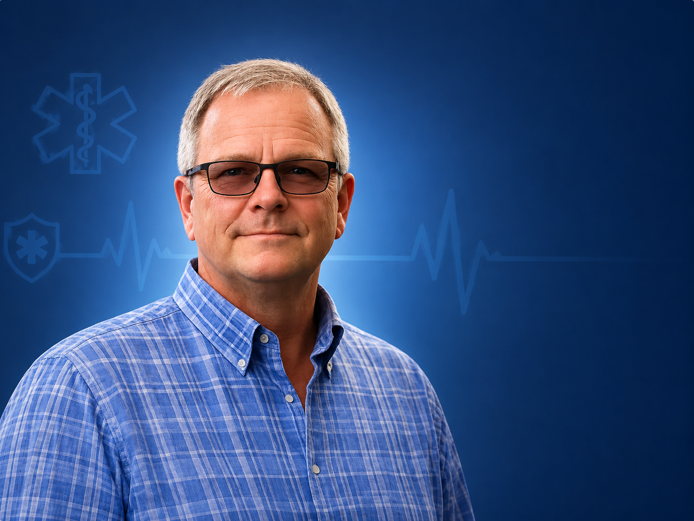
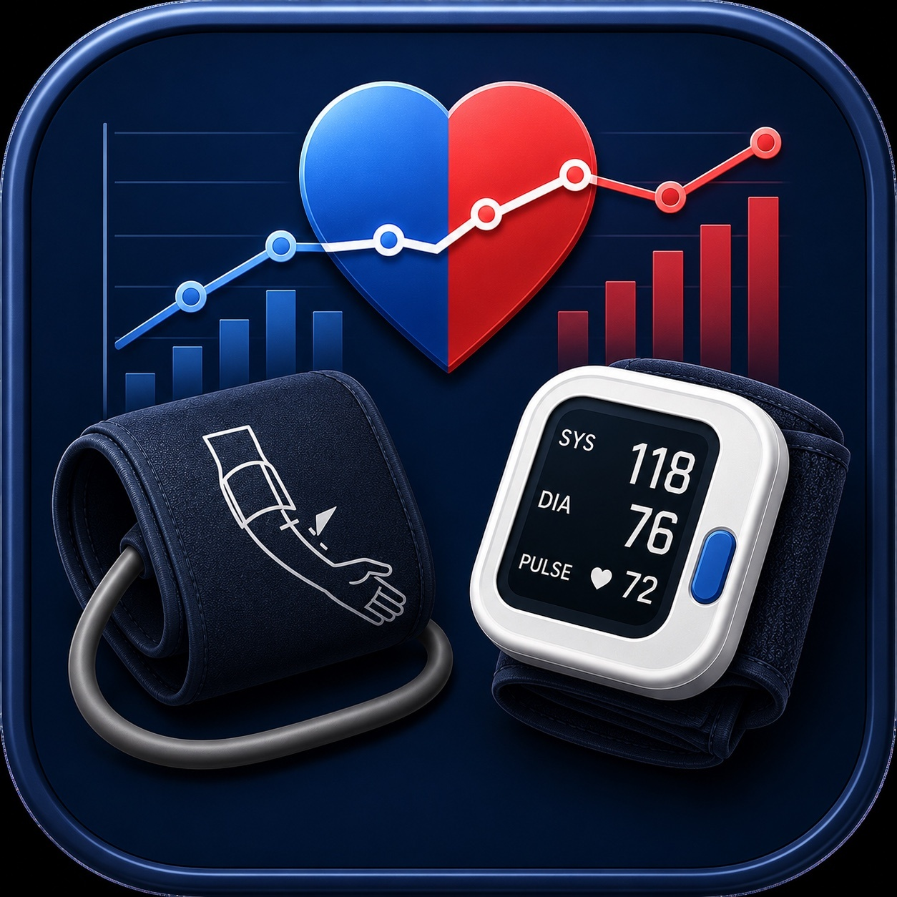

ASM Instructor
A practical class-management application built for Accident Scene Management instructors.
- Roster import and student check-in
- Tests, skills, attendance, and final records
- Student history, class files, and Communication Center tools

“Every tool on this site began as a real problem encountered in nursing or while teaching.”
Explore My Work →A practical class-management application built for Accident Scene Management instructors.

A focused tool for comparing simultaneous blood-pressure readings from two devices.
Small, focused tools that simplify scheduling, travel, patient communication, and remote Mac workflows.
Explore the ToolsMotorcycle safety, crash response, rider education, CPR, and trusted training organizations.
View ResourcesQuestions, project feedback, professional inquiries, or interest in one of the applications.
Connect With Me